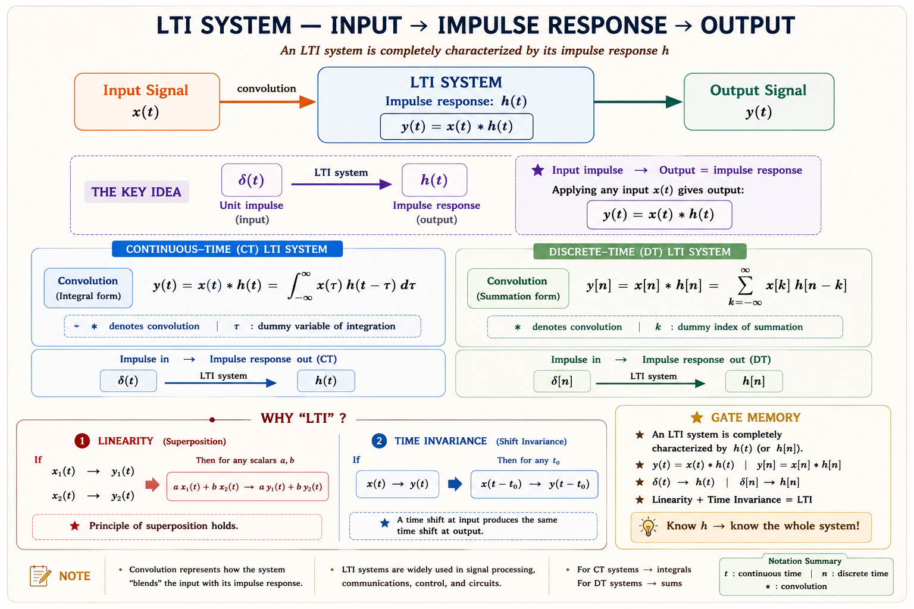
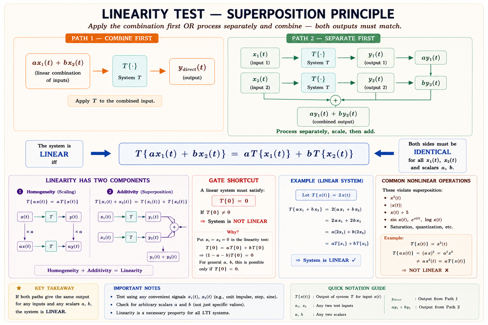
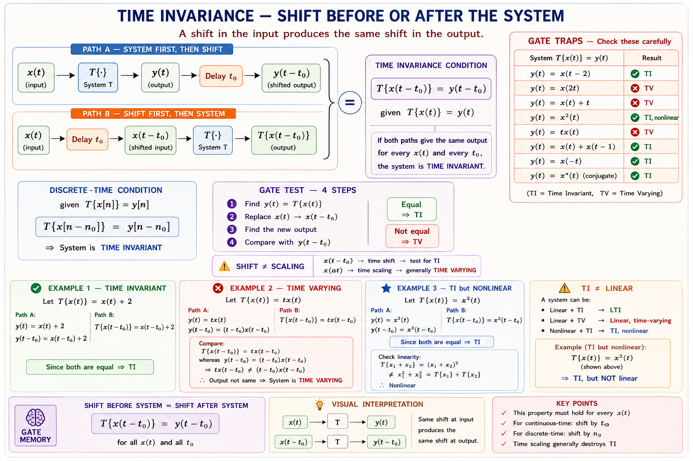
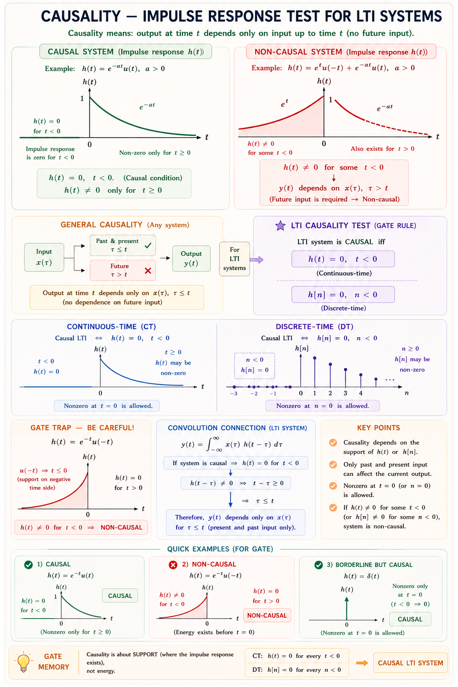
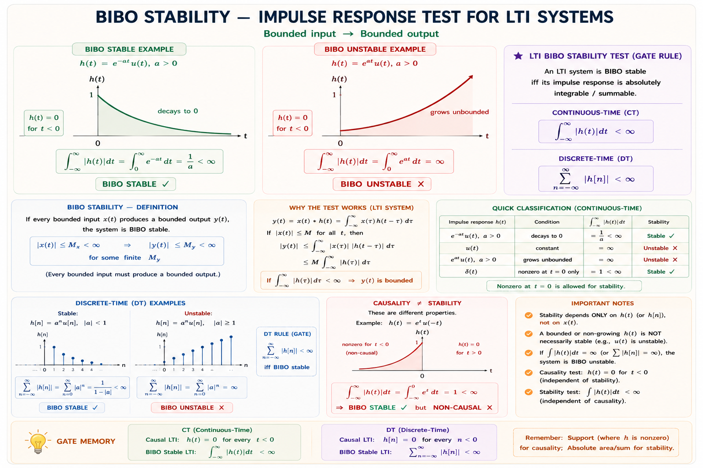
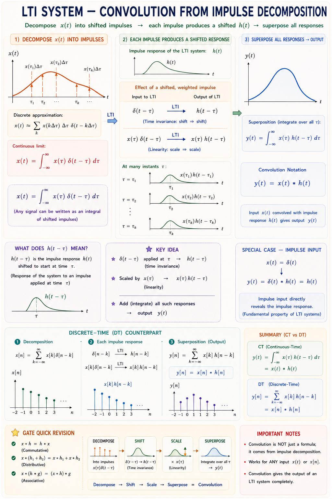
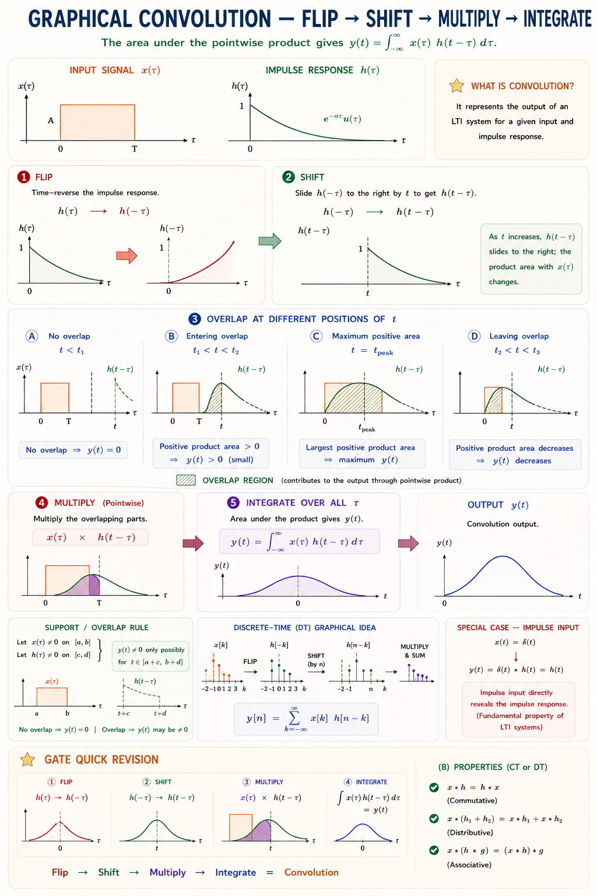
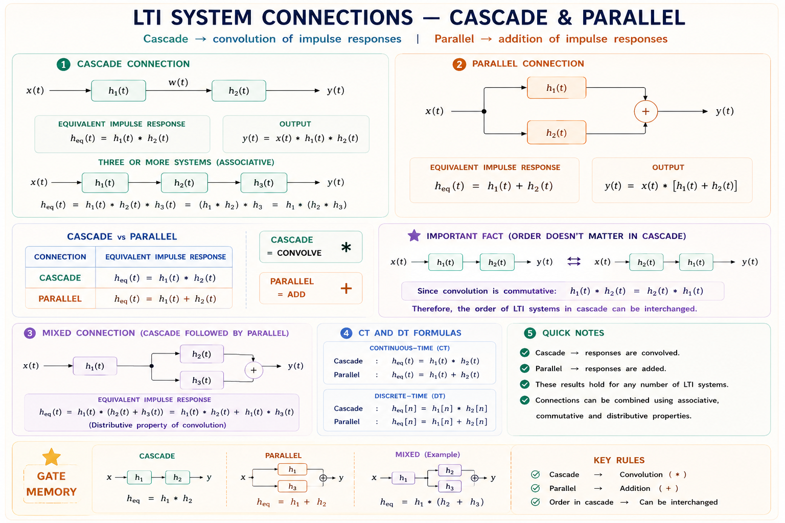
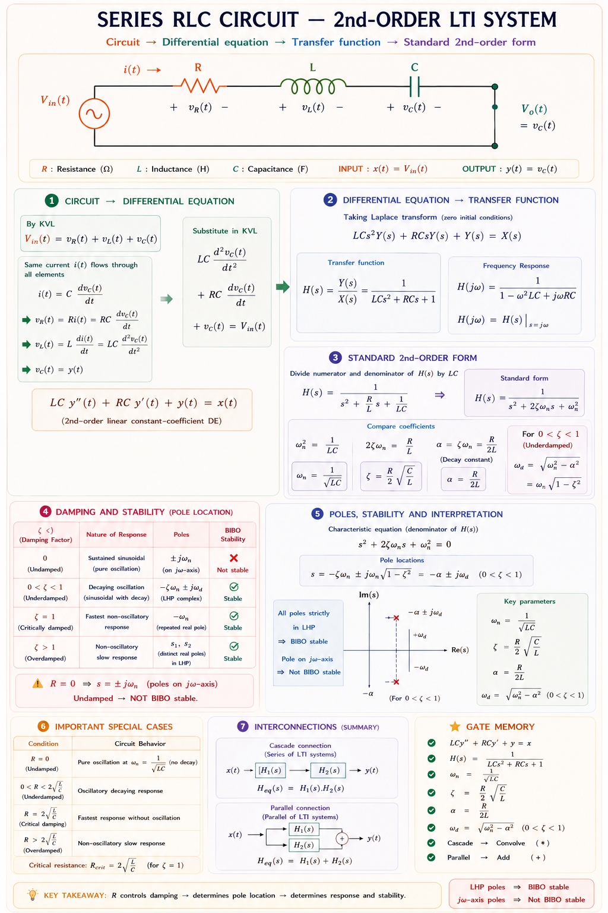
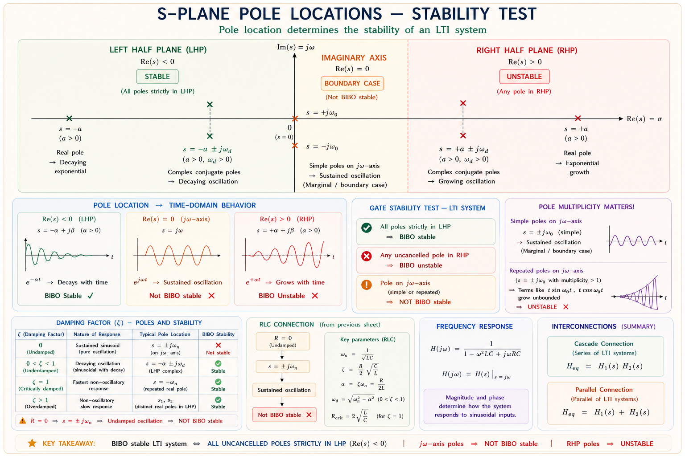

System properties, impulse response, convolution integral, and differential equation representation — a complete GATE, IES, and PSU treatment with full derivations, SVG diagrams, and solved examples based on Oppenheim, Haykin, and Lathi.
Every electrical circuit you analyse — a filter, an amplifier, a communication channel — is a system: it takes an input signal and produces an output signal. The question is: how do we mathematically predict what the output will be for any arbitrary input?
The answer, for the most important class of systems in engineering, is the Linear Time-Invariant (LTI) model. LTI systems are the foundation of signals and systems theory because they are both realistic (most physical systems are well-approximated as LTI) and mathematically tractable — their behaviour is completely characterised by a single function called the impulse response h(t).
Once you know h(t) for an LTI system, you can find the output for any input — no matter how complex — using a single integral: the convolution. This is why h(t) is the "DNA" of an LTI system.

A system is linear if and only if it satisfies two sub-properties simultaneously: additivity (superposition) and homogeneity (scaling). Together they are called the principle of superposition.[1]
A system \(\mathcal{T}\) is linear if for any inputs \(x_1(t)\), \(x_2(t)\) and any scalars \(a, b\):
Think of the system as a water pipe. If you pour water at rate \(x_1\), you get flow \(y_1\) out. If you pour \(x_2\), you get \(y_2\). A linear pipe satisfies: pouring \(x_1 + x_2\) gives exactly \(y_1 + y_2\). No extra turbulence, no saturation. A nonlinear pipe might have a valve that saturates — above a certain input, the output stops increasing linearly.

Linearity strictly requires zero input → zero output. Systems with non-zero initial conditions or additive constants are incrementally linear, not linear.
A system is time-invariant if its behaviour does not change with time — in other words, a time shift in the input produces an identical time shift in the output, with no other change.[1]
Imagine an amplifier that doubles its gain on Monday mornings. If you apply signal \(x(t)\) at noon you get one response, but the same \(x(t)\) at 9 AM Monday gives a different response. That amplifier is time-varying. A time-invariant amplifier gives the same output shape regardless of when you apply the input — only the timing shifts.

Note that a time-scaling (e.g. \(y(t)=x(2t)\)) is time-varying. The substitution \(t \to (t-t_0)\) will not reproduce the shifted output.
A system is causal if the output at any time \(t_0\) depends only on the input at present and past times (\(t \leq t_0\)), not on future inputs. All physical, real-time systems must be causal — a physical system cannot respond before it receives a stimulus.[2]

| Property | Explanation | h(t) Condition | Example |
|---|---|---|---|
| Memoryless | y(t) depends only on x(t) | h(t) = c·δ(t) | Resistor, amplifier |
| Memory | y(t) depends on past/future x | h(t) ≠ c·δ(t) | RC circuit, integrator |
| Causal | No future inputs needed | h(t) = 0 for t < 0 | All physical systems |
| Non-causal | Needs future inputs | h(t) ≠ 0 for some t < 0 | Ideal lowpass filter |
The most important stability definition in signals and systems is BIBO stability — Bounded Input, Bounded Output. A system is BIBO stable if every bounded input produces a bounded output. No bounded input should ever cause the output to grow to infinity.[2]
Strike a bell (bounded input: a short impulse). If the bell rings forever without decaying, the system (bell + air) is unstable — a bounded input produced an unbounded energy output. In a stable bell, the sound decays to zero: the impulse response h(t) is absolutely integrable. An unstable electrical system is analogous: apply a bounded voltage pulse and the current grows without bound (e.g. positive-feedback oscillator with growing amplitude).

The Dirac delta \(\delta(t)\) is the "unit" of signal space — it has unit area, zero duration, and exists at a single instant. By the sifting property of the delta function, any signal can be decomposed into a continuum of weighted, time-shifted impulses:
This decomposes \(x(t)\) into infinitely many scaled impulses \(x(\tau)\delta(t-\tau)\). Since the system is linear, the output is the sum of responses to each impulse. Since it is time-invariant, the response to \(\delta(t-\tau)\) is \(h(t-\tau)\). Combining both:


| Property | Equation | System Implication |
|---|---|---|
| Commutativity | x(t) * h(t) = h(t) * x(t) | Order of systems does not matter |
| Distributivity | x*(h₁+h₂) = x*h₁ + x*h₂ | Parallel LTI systems: h_total = h₁+h₂ |
| Identity | x(t)*δ(t) = x(t) | Delta is the identity for convolution |
| Shift | x(t)*δ(t−t₀) = x(t−t₀) | Delta delays the signal by t₀ |
| Time Scaling | Duration of y = duration of x + duration of h | Output is always longer than either input |

Most physical CT LTI systems — electrical circuits, mechanical systems, acoustical resonators — are described by linear constant-coefficient differential equations (LCCDEs). The general N-th order form is:[1,3]
Coefficients \(a_k\) and \(b_k\) are real constants. This is why these systems are LTI: differentiation is a linear time-invariant operation, and the constant coefficients ensure time invariance.

When we compute h(t), the input is \(\delta(t)\) which is zero for \(t > 0\). Therefore, for \(t > 0\), h(t) satisfies the homogeneous equation. The impulse provides the initial conditions that start the response. This is why h(t) for a causal LTI system looks like a natural (free) response.
The three properties — stability, causality, and the character of h(t) — are deeply interconnected for LTI systems. This section unifies all the conditions in a single framework, which is heavily tested in GATE and IES exams.
| System Type | h(t) Condition | Pole Location (s-plane) | GATE Verdict |
|---|---|---|---|
| Causal + Stable | h(t)=0 for t<0; ∫|h|dt <∞ | All poles in LHP (Re{s}<0) | BIBO Stable ✓ |
| Causal + Unstable | h(t)=0 for t<0; ∫|h|dt =∞ | At least one pole in RHP | BIBO Unstable ✗ |
| Causal + Marginal | Poles on jω axis (simple) | e.g. h(t)=cos(ω₀t)u(t) | Marginally Stable ⚠ |
| Non-causal + Stable | h(t)≠0 for t<0; ∫|h|dt <∞ | Can have RHP poles | BIBO Stable (non-physical) |

Which of the following systems is linear?
Explanation: Differentiation is a linear, time-invariant operation — \(\mathcal{T}\{ax_1+bx_2\} = a\dot{x}_1+b\dot{x}_2\). Option (B) fails zero-input zero-output. Option (A) and (D) fail superposition due to squaring and absolute value (nonlinear).
A system has impulse response \(h(t) = e^{2t}u(t)\). The system is:
Explanation: \(h(t) = e^{2t}u(t)\) is zero for \(t<0\) → causal. But \(\int_0^\infty e^{2t}dt = \infty\) → not absolutely integrable → BIBO unstable. The pole is at \(s=+2\) in the Right Half Plane.
If \(x(t) = e^{-t}u(t)\) and \(h(t) = e^{-2t}u(t)\), find \(y(t) = x(t)*h(t)\).
Solution: Both signals are causal. Using convolution:
\(y(t) = \int_0^t e^{-\tau}\cdot e^{-2(t-\tau)}\,d\tau = e^{-2t}\int_0^t e^{\tau}\,d\tau = e^{-2t}(e^t - 1) = e^{-t} - e^{-2t}\), for \(t \geq 0\).
Answer: \(\boxed{y(t) = (e^{-t} - e^{-2t})u(t)}\). The system produces an output that first rises then decays — classic for cascaded RC circuits.
Is the system \(y(t) = x(2t)\) time-invariant?
Solution: Apply input \(x(t-t_0)\): output becomes \(x(2t-t_0)\). But shifting output y(t) by \(t_0\) gives \(y(t-t_0) = x(2(t-t_0)) = x(2t-2t_0)\). Since \(x(2t-t_0) \neq x(2t-2t_0)\), the system is time-varying. A time-scaling of the argument always destroys time invariance.
Step 1: Express signals. \(x(t) = 1\) for \(-T/2 \leq t \leq T/2\), zero otherwise. Same for h(t).
Step 2: Graphical convolution. Flip h(τ) → h(−τ) = 1 for \(-T/2 \leq -\tau \leq T/2\) → same shape. Slide by t.
Step 3: Identify regions of overlap:
Rect * Rect = Triangle. Tri * Rect = Trapezoid. This pattern is tested repeatedly in GATE. The convolution "smooths" the signal and increases its support (duration).
(a) Linearity Test:
Let \(y_1(t) = t\cdot x_1(t)\) and \(y_2(t) = t\cdot x_2(t)\).
Apply input \(ax_1+bx_2\): output \(= t(ax_1+bx_2) = at\cdot x_1 + bt\cdot x_2 = ay_1+by_2\). ✓ Also, when \(x=0\), \(y=0\). ✓
(b) Time Invariance Test:
Apply delayed input \(x(t-t_0)\): output \(y_2(t) = t\cdot x(t-t_0)\).
Now delay the output: \(y(t-t_0) = (t-t_0)\cdot x(t-t_0)\).
Since \(t\cdot x(t-t_0) \neq (t-t_0)\cdot x(t-t_0)\) in general, the system is time-varying.
Conclusion: The system \(y(t)=t\cdot x(t)\) is linear but NOT time-invariant (LTV system). It cannot be described by a convolution with a fixed h(t).
BIBO Test: \(\displaystyle\int_{-\infty}^{\infty}|h(\tau)|\,d\tau = \int_0^{\infty} 1\,d\tau = \infty\) → NOT BIBO stable.
Physical Interpretation: This system is a pure integrator: \(y(t) = \int_{-\infty}^t x(\tau)\,d\tau\). Applying the bounded input \(x(t)=u(t)\) (unit step, \(|x|\leq 1\)):
The ramp grows without bound — confirming BIBO instability. In practice, op-amp integrators saturate at the supply rail for this reason.
The integrator is causal (h(t)=u(t)=0 for t<0) but unstable. Causality does not imply stability. Both must be checked separately.
Ask any question on CT LTI systems, convolution, properties, or differential equations. Based on Oppenheim, Haykin, and Lathi.
Superposition: T{ax₁+bx₂}=ay₁+by₂. Zero input must give zero output. Any additive constant or squaring violates linearity.
Delay the input, get delayed output. Fails if argument is scaled (x(2t)), multiplied by t, or has explicit time-varying coefficients.
h(t)=0 for t<0. Output at t₀ depends only on past/present input. All physical real-time systems must be causal.
∫|h(t)|dt <∞. Poles must lie in Left Half Plane. Integrator h=u(t) is unstable. Poles on jω axis are marginally unstable.
y(t)=x(t)*h(t)=∫x(τ)h(t−τ)dτ. Commutative, associative, distributive. Cascade→multiply, parallel→add h(t).
Σaₖy⁽ᵏ⁾=Σbₖx⁽ᵏ⁾. For causal LTI: h(t) = homogeneous response. Stable iff all characteristic roots have Re{s}<0.
"LCMS" — Linearity (superposition), Causality (h=0 for t<0), Memory (h≠cδ means memory), Stability (∫|h|dt<∞).
Stability vs Causality: "Causal is structural (h(t)=0 early), Stable is energetic (h decays fast)." — independent properties!
Convolution rule: "Flip, shift, multiply, integrate." — FSMI in order.
Duration: "Output's width = sum of input widths." — Rect*Rect → Triangle (width doubles).
Fourier Series Representation of Periodic Signals — Trigonometric and exponential forms, Dirichlet conditions, Parseval's theorem, power spectrum, and CT Fourier Transform including properties, pairs, and convolution-multiplication duality. Complete GATE & IES coverage.
All technical content is derived from the following standard textbooks. All explanations, derivations, and diagrams are original to Aarova AI.